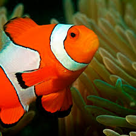

Clownfish

A layer of mucus on the clownfish's skin makes it immune to the fish-eating anemones's lethal sting.
Scientific Name: Amphiprioninac
Average Length:11 centimeters
Average Lifespan:7 years
Habitat:Tropical coral reefs
Bright orange with three distinctive white bars, clown anemonefish are among the most recognizable of all reef-dwellers.They reach about 11 centimeters in length,and are named for the multicolored sea anemone in which they make their homes.